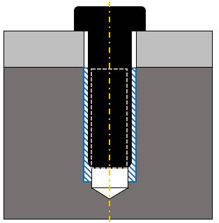
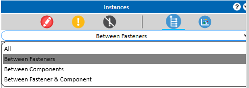
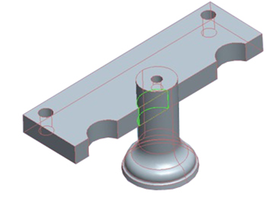

目的とする機能と組み立てやすさを実現するために、アセンブリ構成部品間の干渉を避けてください。
このルールは、アセンブリ構成部品間の干渉状態を特定します。干渉検出は複雑なアセンブリで特に有用であり、構成部品同士が干渉しているかどうかを可視化して判断するのが難しい場合に役立ちます。
デフォルトでは、すべてのアセンブリ構成部品が解析対象として選択され、すべてのキルト（Quilt）サーフェスは干渉検出から除外されます。一般に、構成部品の公称寸法（ノミナル寸法）により干渉が発生しないことが期待されます。
干渉検出ルールは、次の2つの方法で構成できます：
すべての構成部品をチェック
これはデフォルトで選択されています。アセンブリ内のすべての構成部品の組み合わせ（ペア）について、干渉状態がチェックされます。
選択した構成部品をチェック
デフォルトではチェックされていません。アセンブリ内で選択した構成部品ペア間の干渉状態がチェックされます。
ルール構成で構成部品を追加する方法は3つあります：
列に構成部品名を手動で入力します。
右クリックしてファイルの場所を参照（browse）します。この手順を Component 1 と Component 2 の両方に対して実行します。
キーボードで Ctrl+I を押して、MS Excel ファイルをインポートします。この Excel ファイルには、各列に追加された構成部品名が入った2つの列が含まれます。Excel ファイルをインポートすると、データは自動的に Rule Manager に取り込まれます（下の例を参照）。
Component 1 |
Component 2 |
Gear_prt |
ring_dsk_2 |
Gear_prt |
ring_dsk_4 |
Rod_new |
connex_rod_xd7800 |
Plate |
xnp_123prt |
標準テンプレート形式
Component 1 の各パーツを、Component 2 にあるすべてのパーツと照合してチェック
このオプションは、Component 1 列にある各パーツについて、Component 2 列にあるすべてのパーツとの干渉をチェックするために使用できます。
入力 |
解釈 |
ABC |
ABC.prt または abc.prt.1 または aBc.prt.4 – アセンブリで使用されている最新バージョンがチェックされます。 |
ABC.asm |
アセンブリとして「.asm」というサフィックスが追加され、チェック対象になります。 |
*ABC* |
名前に abc または ABC を含むパーツ。 |
* |
すべてのパーツ。 |
*_M32 |
_M32 で終わるすべてのパーツ。 |
*_pcb_*.asm |
名前に _pcb_ を含むすべてのサブアセンブリ。 |
注記:
ファイル名は大文字・小文字を区別しません。
干渉検出の検証中に、構成部品のリストを除外できます。この条件は、許容される干渉を引き起こすことが分かっている特定の構成部品を含めた解析を行う場合に、ユーザーが望む干渉結果のみを得られるようにするために役立ちます。
ルール構成で除外構成部品を追加する方法は3つあります：
構成部品名を手動で入力します。
右クリックしてファイルの場所を参照し、パーツまたはアセンブリ名を選択します。
キーボードで Ctrl+I を押して、MS Excel ファイルをインポートします。この Excel ファイルには、各行に追加された構成部品名が入った1列が含まれます。Excel ファイルをインポートすると、データは自動的に Rule Manager に取り込まれます（下の例を参照）。
Gear_prt |
Gear_prt |
Rod_new |
Plate |
標準テンプレート形式
入力 |
解釈 |
ABC |
ABC.prt または abc.prt.1 または aBc.prt.4 – アセンブリで使用されている最新バージョンがチェックされます。 |
ABC.asm |
アセンブリとして「.asm」というサフィックスが追加され、チェック対象になります。 |
*ABC* |
名前に abc または ABC を含むパーツ。 |
*_M32 |
_M32 で終わるすべてのパーツ。 |
*_pcb_*.asm |
名前に _pcb_ を含むすべてのサブアセンブリ。 |
ソリッド同士（Solid to Solid）
ソリッドとキルト（Solid to Quilt）
パーツ（ソリッドまたはキルト）とサブアセンブリ（Part (Solid or Quilt) to sub-assembly）
サブアセンブリ同士（Sub-assembly to sub-assembly）
ハイブリッドパーツ（ソリッドとキルトの両方を含む）（Hybrid Parts (having solids as well as quilts)）
Option |
Function |
Ignore Interference Volume |
構成された値より小さい干渉体積（Interference volume）は無視されます。 |
Ignore Quilt Surfaces |
アセンブリファイル内のすべての構成部品／キルトサーフェスが無視されます。 |
Ignore Threaded Region |
ルール検証中、ねじ穴と留め具の間の実際の干渉領域（インターフェース）が無視されます。 例：  |
DFMPro は、データベースに登録されている留め具に応じて結果を分類します。


注記:
このルールは、DFMPro Settings に基づき、トップレベルのアセンブリパーツで実行できます。